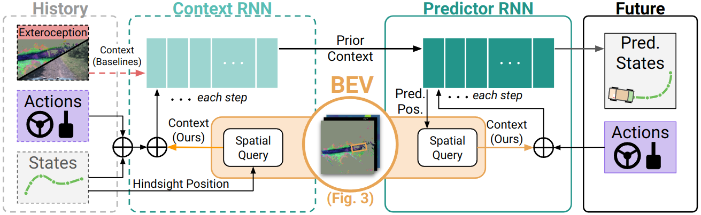
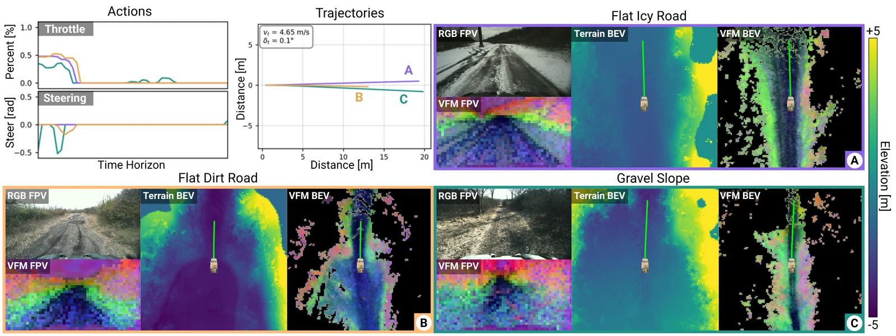
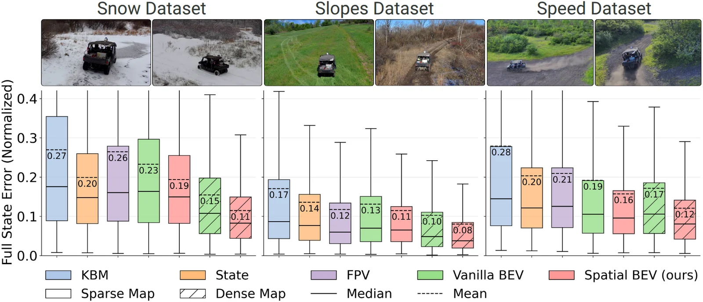
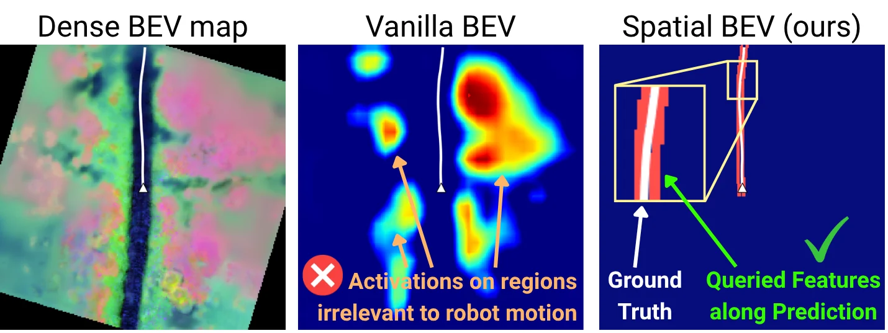
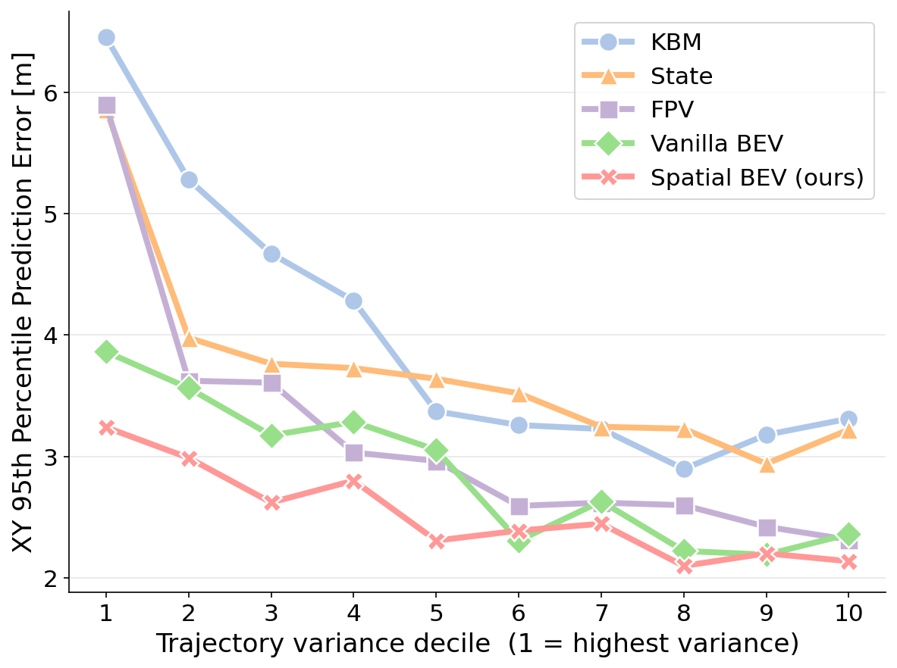
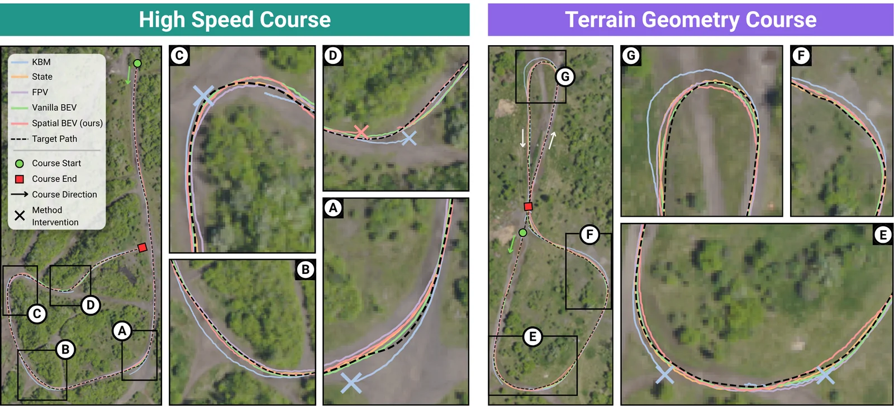

Autonomously navigating off-road terrain at high speed demands accurate control, which often relies on dynamics models that capture complex interactions between the robot and terrain. In off-road regimes, terrain interaction is a major component of the vehicle's dynamics. Prior work attempts to capture this effect by training learned models of the vehicle's dynamics, conditioned on its perception of the local environment. However, said conditioning is often overly simplistic, ignoring the spatial structure of the dynamics problem. Our approach, SpatialBEV, exploits this spatial structure. At each step, we query the bird's-eye-view (BEV) features around the predicted state, conditioning the next prediction on current geometric and semantic cues. We additionally present a benchmarking approach that mines a dataset's most difficult scenarios. On datasets collected across seasons, SpatialBEV reduces prediction error by 17.1%, compared to physics-based and learned baselines. We further evaluate on hardware on high-speed (≥10 m/s) and geometrically challenging courses with a 25.3% reduction in maximum cross-track error.
Prior work encodes a BEV map once, as a fixed context at the start of a rollout. At high speed the robot covers large distances within one prediction horizon, so every step stays conditioned on the same initial encoding rather than on the terrain the robot is actually about to drive over. SpatialBEV instead treats the BEV map as a source of feedback at every prediction step. We further expand on our approach with formalism and extensive evaluations.

A context RNN initializes the predictor from state and action history. At every step, both networks spatially query the structured BEV map at the known or predicted position.
Inside the spatial query: the next predicted state places a footprint over the BEV map, and the sampled features correct the hidden state and feed the subsequent cell.
Between consecutive RNN cells, we decode the hidden state into a predicted state and place the vehicle's tire-track footprint on the BEV map. Features under the footprint are bilinearly sampled and encoded into a context vector that is used twice:
The BEV map stacks terrain elevation, surface normals and visual foundation model (VFM) features. Only the footprint is platform-specific; a legged or tracked robot just swaps in its own contact pattern.
Aggregate metrics are dominated by easy, benign driving. This masks long-tail failure modes that determine real-world safety. To find these failure cases, where terrain likely matters, we connect samples whose normalized action sequences and initial conditions fall within an \(\mathcal{L}_2\) threshold (chosen by maximizing the mean silhouette coefficient) and partition the resulting graph into cliques. Each group \(\mathcal{G}\) of \(N\) trajectories is scored by how much its trajectories diverge, using the mean pairwise Hausdorff distance:
$$\bar{d}_H(\mathcal{G}) = \frac{1}{N(N-1)} \sum_{i=1}^{N} \sum_{j \neq i} d_H\!\left(\tau^i, \tau^j\right)$$Sorting groups by this score ranks the dataset by difficulty, and the top \(p\)% of groups form the hard benchmark \(\mathcal{D}_\text{hard} \subset \mathcal{D}\): same actions, different outcomes, because of the terrain. The error metric itself is unchanged; only the distribution it is measured over differs:
$$\text{err}_{\mathcal{D}} = \mathbb{E}_{\tau \sim \mathcal{D}}\left[\text{err}(\hat{\tau}, \tau)\right], \qquad \text{err}_{\text{hard}} = \mathbb{E}_{\tau \sim \mathcal{D}_\text{hard}}\left[\text{err}(\hat{\tau}, \tau)\right]$$
Similar actions, different trajectories. (C) travels further going downhill, (B) moves the least on flat dirt, and (A) travels further on flat, low-friction ice.
We train on 2.2 hr of spring, summer and fall driving at one site, then test on 2.1 hr of held-out data across two sites, 34% of it in winter with 6–9″ of snow and thick ice never seen in training. With dense maps, SpatialBEV reduces error relative to the strongest baseline on each split by 17.1% on Snow, 10.7% on Slopes, 19.9% on Speed and 17.1% overall.

Full-state prediction error on three sub-datasets. Snow is hardest for every method; dense maps reduce both mean error and variance.
| Method | Map | Snow | Slopes | Speed | Full | ||||
|---|---|---|---|---|---|---|---|---|---|
| MSE [m²] ↓ | P95 ↓ | MSE [m²] ↓ | P95 ↓ | MSE [m²] ↓ | P95 ↓ | MSE [m²] ↓ | P95 ↓ | ||
| KBM | – | 2.68 ± 4.23 | 8.92 | 2.31 ± 4.71 | 8.00 | 2.83 ± 6.52 | 10.24 | 2.10 ± 4.24 | 7.20 |
| State | – | 2.54 ± 2.52 | 7.62 | 2.20 ± 3.15 | 7.48 | 1.91 ± 3.69 | 7.39 | 1.99 ± 2.75 | 6.71 |
| FPV | – | 2.34 ± 2.37 | 6.93 | 1.69 ± 2.95 | 5.82 | 2.12 ± 4.55 | 7.82 | 1.77 ± 2.83 | 6.00 |
| Vanilla BEV | sparse | 2.49 ± 2.89 | 8.12 | 1.98 ± 3.39 | 7.20 | 1.59 ± 3.47 | 6.33 | 1.73 ± 2.87 | 6.66 |
| Vanilla BEV | dense | 2.10 ± 2.44 | 6.76 | 1.97 ± 3.28 | 7.70 | 1.41 ± 2.93 | 5.17 | 1.46 ± 2.50 | 5.63 |
| SpatialBEV (ours) | sparse | 2.45 ± 2.66 | 8.06 | 1.78 ± 2.51 | 6.87 | 1.50 ± 3.90 | 5.42 | 1.70 ± 2.68 | 6.26 |
| SpatialBEV (ours) | dense | 1.74 ± 1.98 | 5.55 | 1.51 ± 2.44 | 5.26 | 1.13 ± 2.95 | 3.58 | 1.21 ± 2.14 | 4.41 |
Offline position prediction error. Best in bold, second best underlined.

Vanilla BEV's activations (left) fall on regions the robot never reaches. SpatialBEV's queries (right) follow its prediction, which tracks the ground-truth path (white).
Does the benchmark actually find the hard cases? We split the test set into ten deciles by trajectory variance, from highest (1st) to lowest (10th), and evaluate every model on each. Every model's worst-case error is highest on the highest-variance decile and falls steadily from there, so the ranking tracks how hard the data is to model. On the hardest decile, the FPV and state-only baselines degrade the most, a long-tail failure that aggregate evaluation would hide.

Evaluation from the highest- to lowest-variance deciles of the clustered benchmark. Error falls with variance for every model.
We deploy each model inside an MPPI controller (825 samples at 10 Hz) on a full-size Yamaha Viking ATV, on a 739 m high-speed course at a 10 m/s target and a 524 m course with steep slopes and banked turns at 8 m/s. The physics baseline understeers into repeated interventions; SpatialBEV has the lowest worst-case cross-track error on the geometry course.
Onboard rollouts from each model during closed-loop trials. Red panels mark interventions.

Paths on both courses. The KBM baseline understeers into interventions (A, D, E); every learned method, including ours, understeers in the tightest turns (C, G).
| Method | High Speed Course (1 trial) | Geometry Course (4 trials) | ||||||||
|---|---|---|---|---|---|---|---|---|---|---|
| # Intv ↓ | vel. avg | vel. max | CTE avg ↓ | CTE max ↓ | # Intv ↓ | vel. avg | vel. max | CTE avg ↓ | CTE max ↓ | |
| KBM | 3.00 | 7.75 | 11.20 | 0.73 | 5.04 | 3.75 | 6.13 | 9.01 | 0.81 | 5.51 |
| State | 0.00 | 8.39 | 10.96 | 0.42 | 2.29 | 0.00 | 6.80 | 8.68 | 0.45 | 3.35 |
| FPV | 0.00 | 7.85 | 10.98 | 0.80 | 3.41 | 0.75 | 6.50 | 8.90 | 0.65 | 4.90 |
| Vanilla BEV | 0.00 | 8.44 | 10.94 | 0.47 | 3.26 | 0.00 | 6.94 | 8.60 | 0.43 | 3.67 |
| SpatialBEV (ours) | 1.00* | 8.02 | 10.41 | 0.51 | 2.62 | 0.00 | 6.58 | 8.66 | 0.60 | 2.74 |
Hardware results; velocities in m/s, cross-track error (CTE) in m. *Diagnosed as an MPPI line-tracking failure rather than a dynamics prediction error (see paper appendix).
@inproceedings{nye2026structured,
title={Structured Perception Representations for Off-road Dynamics Learning},
author={Nye, Micah and Triest, Samuel and Sivaprakasam, Matthew and Adu, Isaiah and Scherer, Sebastian and Wang, Wenshan},
booktitle={Conference on Robot Learning (CoRL)},
year={2026},
}